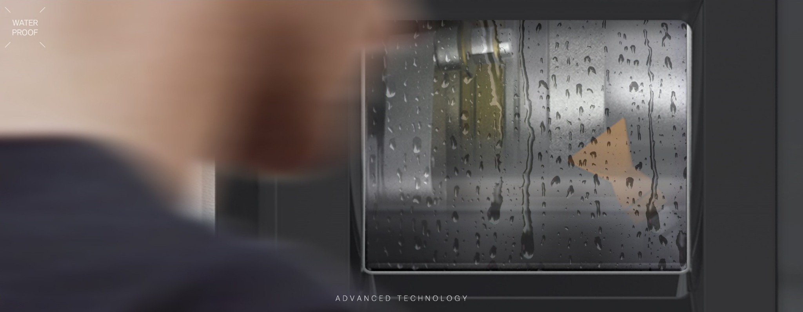
防水结构
加工仓针对湿式加工环境设计，降低水汽对设备内部的影响。
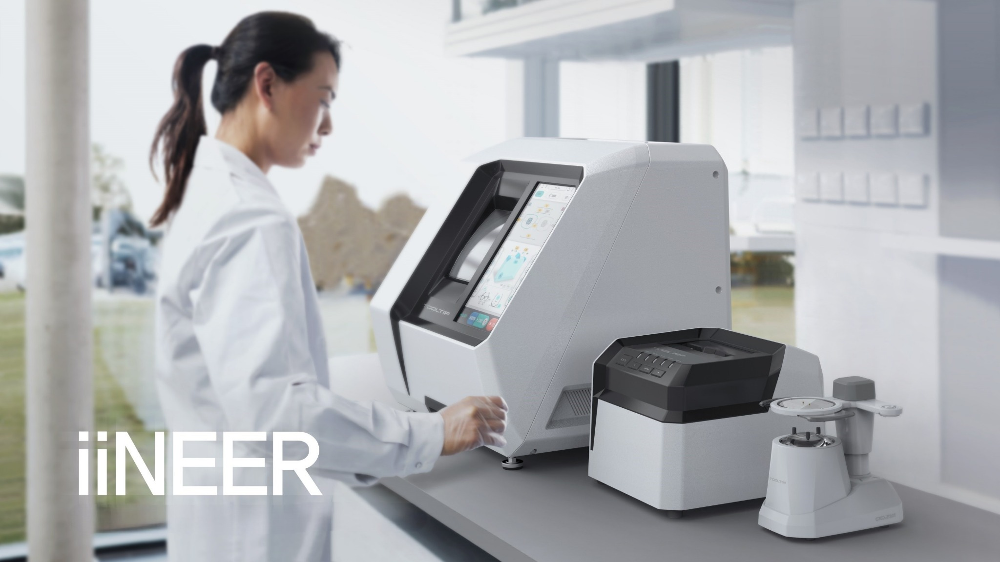
PRIMARY PRODUCT
网站以全自动磨边机 INE-200 为主线，INT-200 与 INB-200 作为完整加工流程的配套设备呈现。
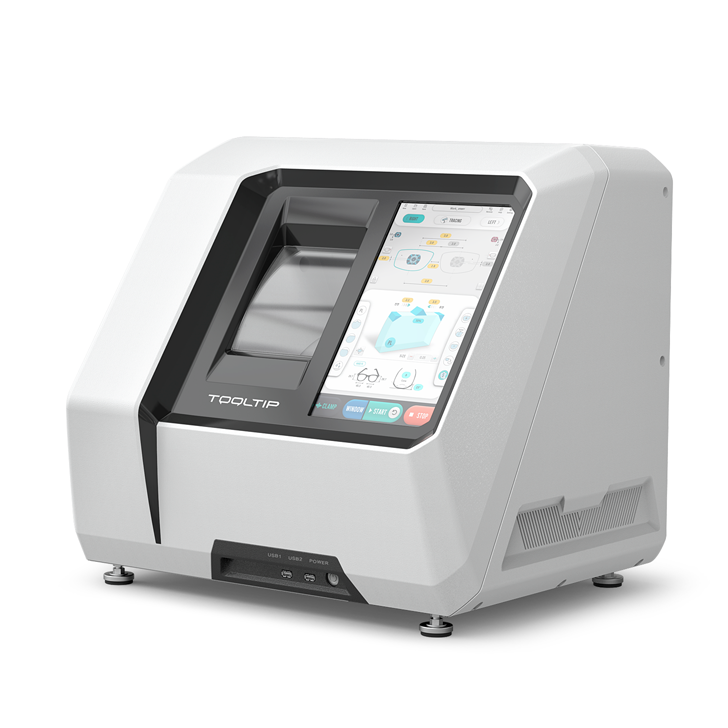
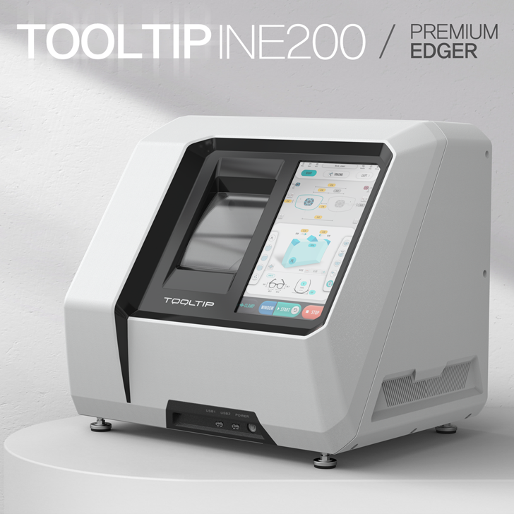
INE-200 / PREMIUM EDGER
13.3 英寸触控界面、Windows 平台、自动门、2D/3D 边位编辑与 WiFi 远程维护，面向现代眼镜店与加工中心。
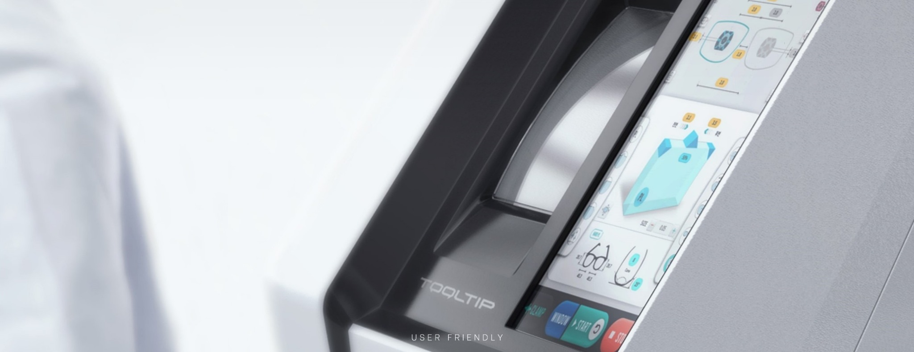
INTERFACE
加工前可在屏幕上查看镜片形状、边位、尺寸与加工状态，减少反复确认，提高操作效率。
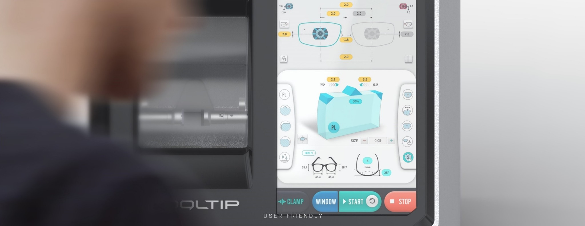
ADVANCED TECHNOLOGY

加工仓针对湿式加工环境设计，降低水汽对设备内部的影响。
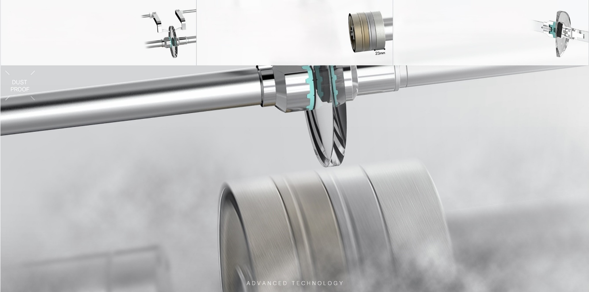
稳定夹持镜片，配合多种砂轮与加工模式，覆盖常用镜片加工需求。
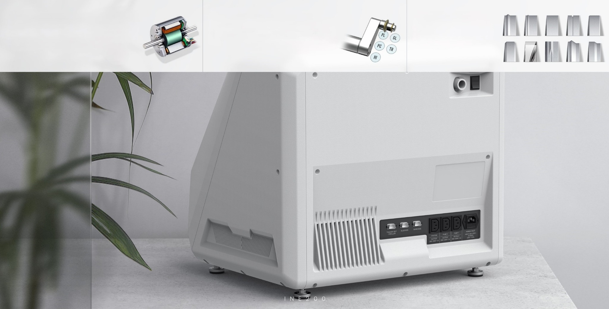
接口集中布置，便于安装、维护与连接配套设备。
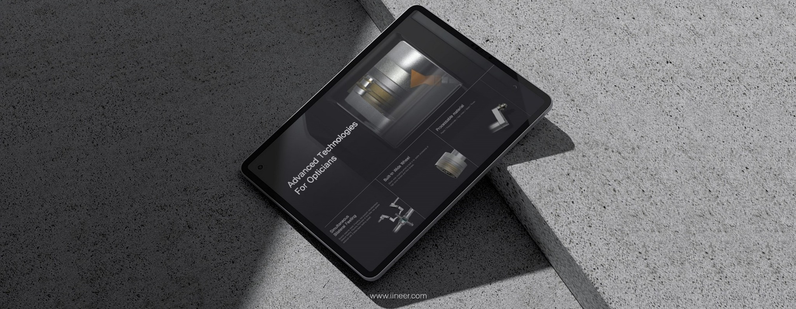
ONE SYSTEM
TOOLTIP 200 系列由三台设备构成完整流程：INT-200 扫描，INB-200 定位，INE-200 自动磨边。
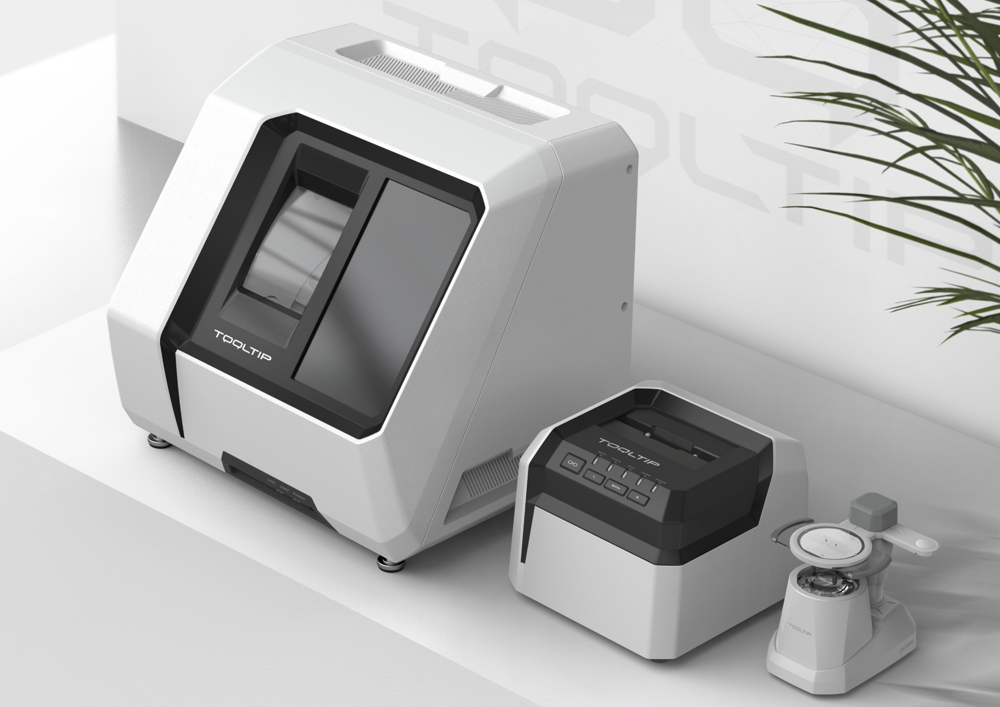
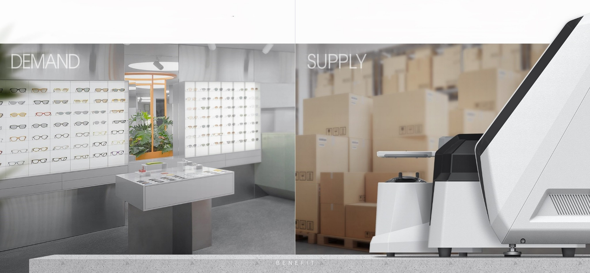
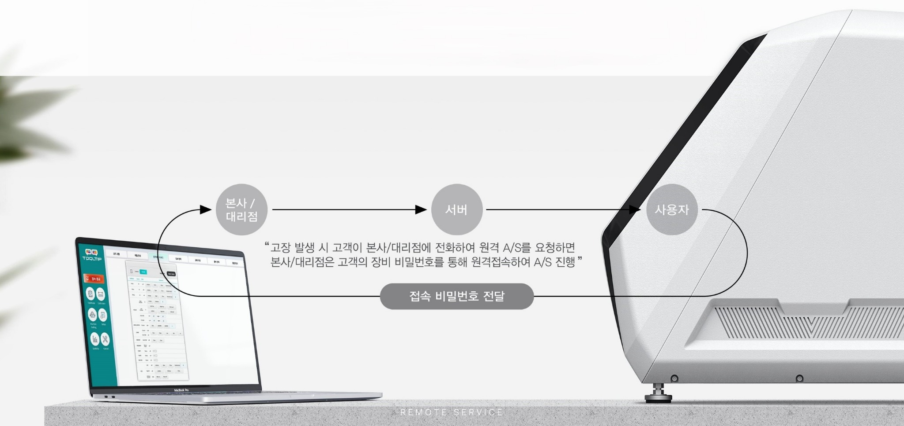
REMOTE SERVICE
设备发生问题时，可通过网络进行远程诊断、软件维护与售后支持，降低停机时间。
PRODUCT LINE
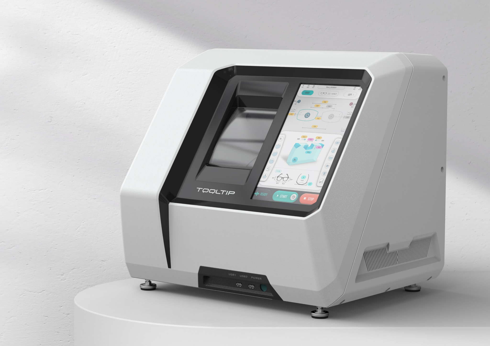
INE-200
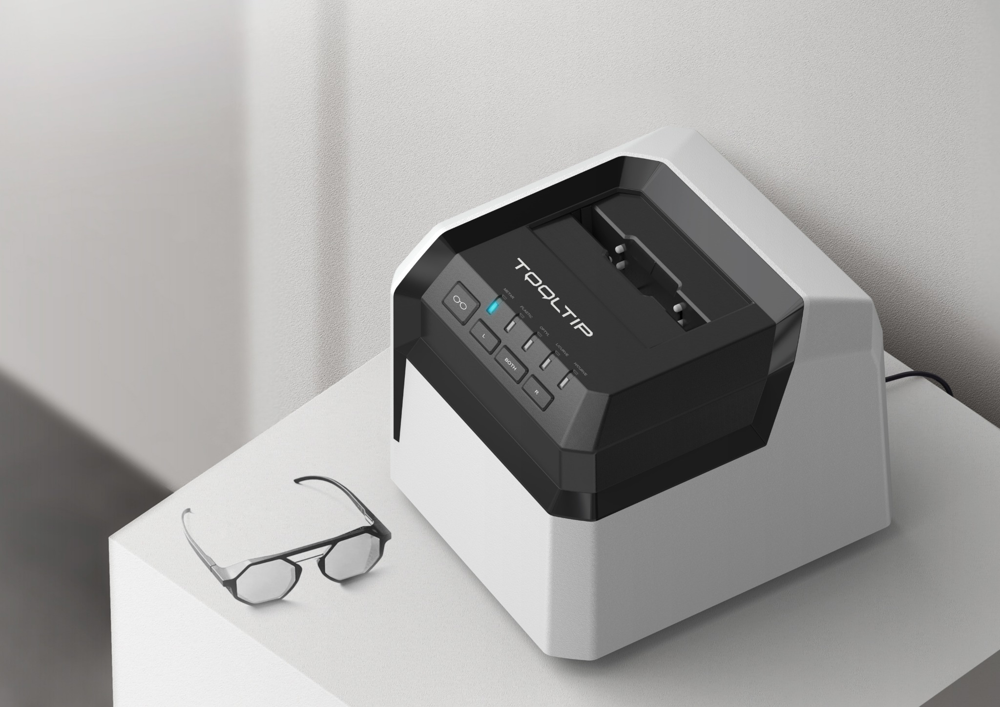
INT-200
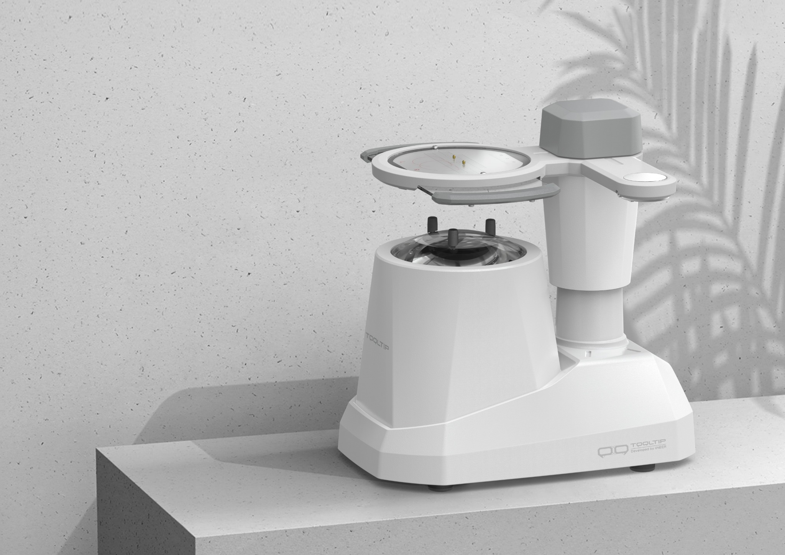
INB-200
INDUSTRIAL DESIGN
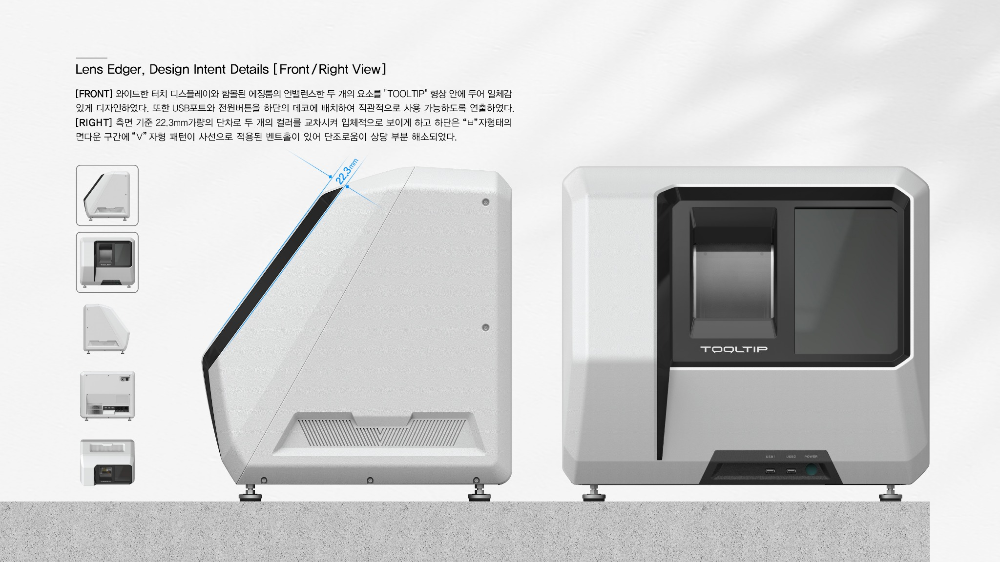
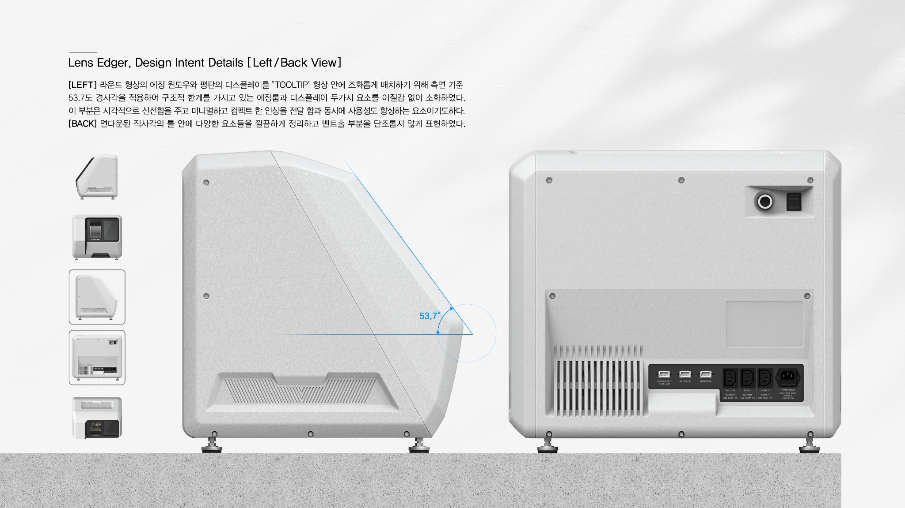
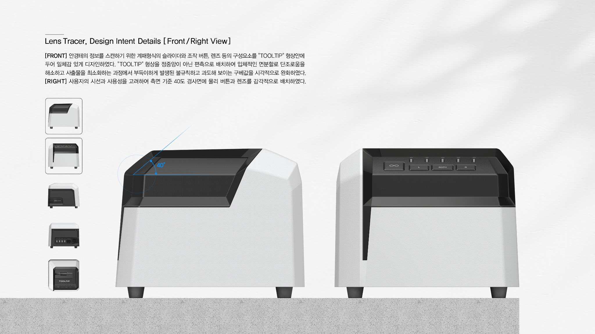
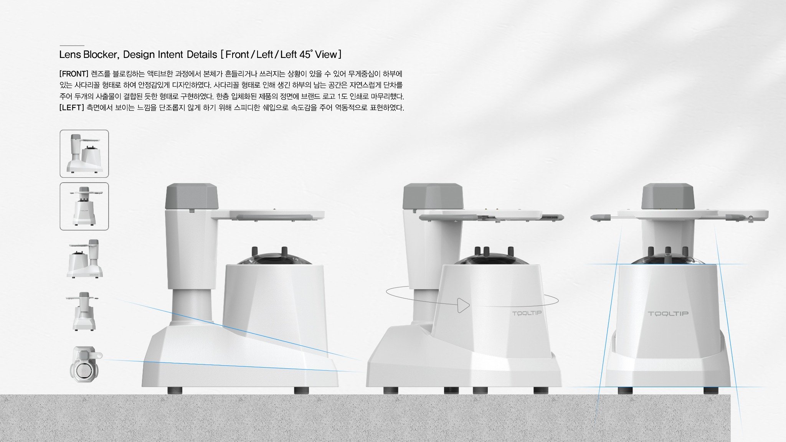
CONTACT
产品咨询、报价、发货时间与售后服务，请扫码添加微信。